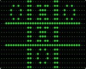
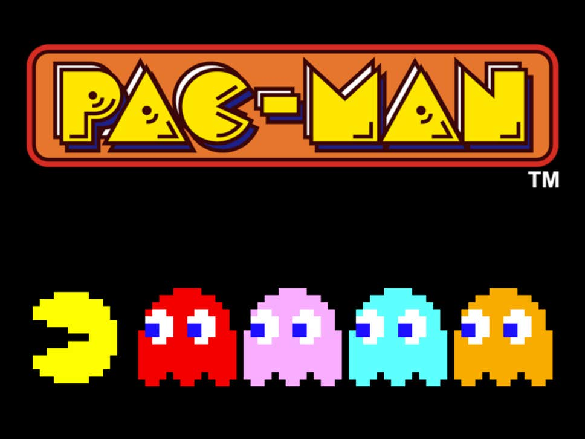

INTRODUCCIÓN

Hoy en día, los videojuegos conforman una industria global de más de 100 mil millones de euros, y casi dos tercios de los hogares tienen miembros que juegan con regularidad. Y realmente no es de extrañar: los videojuegos se han instalado en nuestras vidas y abarcan un sinfín de plataformas y géneros.
La historia de los videojuegos tiene su origen en la década de 1950 cuando, tras el fin de la Segunda Guerra Mundial, las potencias vencedoras de la guerra, construyeron los primeros superordenadores programables.
Asimismo, los primeros intentos por implementar programas de carácter lúdico (inicialmente programas de ajedrez) no tardaron en aparecer, y se fueron repitiendo durante las siguientes décadas.
La historia de los videojuegos se puede clasificar por etapas:
- Inicios
- 1970-1979
- 1980-1989
- 1990-1999
- A partir de los 2000
